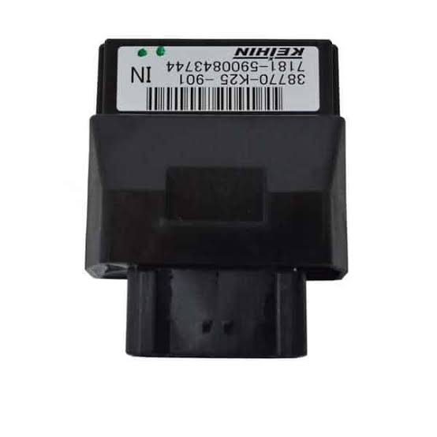
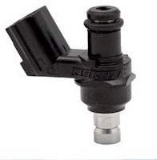

Beranda
Tujuan Pembelajaran
Setelah mempelajari modul ini, peserta didik diharapkan mampu:
- Menjelaskan pengertian dan tujuan Engine Management System.
- Menjelaskan dasar regulasi pemerintah Indonesia terkait emisi dan teknologi kendaraan.
- Membedakan sistem karburasi dengan sistem injeksi/PGM-FI.
- Mengidentifikasi sistem aliran bahan bakar, sistem kontrol elektronik, dan sistem induksi udara pada EFI.
- Menjelaskan hubungan kerja sensor, ECU/ECM, aktuator, bahan bakar, dan udara.
Cara Penggunaan Modul
- Baca Beranda dan pahami tujuan pembelajaran.
- Kerjakan Pretest melalui Google Form.
- Pelajari seluruh bagian Materi, termasuk gambar dan animasi.
- Kerjakan Quis melalui Wayground.
- Kerjakan Evaluasi/Postes melalui Google Form.
Pretest
Kerjakan pretest sebelum mempelajari materi.
Buka Google Form Pretest ↗Ganti URL pada bagian PENGATURAN LINK di akhir file ini.
Materi Pelajaran 1: Identifikasi Engine Management System
1. Pengertian dan Tujuan Engine Management System Pada Kendaraan
Engine Management System (EMS) adalah sistem pengendalian mesin yang mengintegrasikan sensor, ECU/ECM, aktuator, sistem bahan bakar, sistem udara, dan sistem pengapian agar mesin bekerja secara optimal.
Tujuan utamanya antara lain meningkatkan efisiensi bahan bakar, menjaga performa mesin, mengurangi emisi gas buang, memudahkan diagnosis gangguan, dan menjaga kestabilan kerja mesin pada berbagai kondisi.
🎬 Animasi Interaktif Engine Management System – PGM-FI
Animasi PGM-FI dari aplikasi Flash lama ditampilkan langsung di dalam materi menggunakan Ruffle, sehingga tidak memerlukan Adobe Flash Player.
Jika animasi Flash tertentu tidak kompatibel dengan Ruffle, siswa tetap dapat melihat video PGM-FI di bawah ini.
▶ Video Prinsip Kerja PGM-FI
2. Dasar Hukum / Regulasi Pemerintah Indonesia
Pengembangan dan penerapan teknologi pengendalian emisi kendaraan di Indonesia berkaitan dengan ketentuan pemerintah mengenai emisi gas buang dan standar emisi kendaraan bermotor. Dalam pembelajaran, peserta didik perlu memahami bahwa teknologi EFI/PGM-FI mendukung pengendalian campuran udara-bahan bakar secara lebih presisi sehingga membantu memenuhi standar emisi.
3. Perbandingan Sistem Karburasi dan Sistem Injeksi (PGM-FI/EFI)
| Aspek | Karburator | Injeksi PGM-FI / EFI |
|---|---|---|
| Pembentukan campuran | Menggunakan prinsip venturi dan kevakuman. | Jumlah bahan bakar dikontrol melalui injektor berdasarkan perintah ECU/ECM. |
| Pengontrol utama | Mekanisme mekanis dan kevakuman. | ECU/ECM menerima informasi sensor dan mengendalikan aktuator. |
| Ketepatan campuran | Lebih dipengaruhi kondisi mekanis dan penyetelan. | Lebih presisi karena dikontrol elektronik. |
| Efisiensi & emisi | Umumnya lebih sulit dioptimalkan pada semua kondisi. | Mendukung efisiensi dan pengendalian emisi yang lebih baik. |
Video Animasi Karburator
Video: Basic knowledge Carburetor.
Video Sistem EFI / PGM-FI
Video: Prinsip Kerja System PGM-FI Honda.
ECU mengolah informasi sensor dan mengatur injektor serta aktuator sesuai kondisi mesin.
4. Bagian Engine Management System (EFI)
⛽ Sistem Aliran Bahan Bakar

Komponen utama meliputi tangki, pompa bahan bakar, filter, saluran/fuel rail dan injector.
Meliputi tangki, pompa bahan bakar, filter, fuel rail/selang, regulator sesuai tipe sistem, dan injector.
🧠 Sistem Kontrol Elektronik

Meliputi sensor, ECU/ECM, kabel/wiring, dan aktuator. ECU/ECM memproses input sensor untuk menentukan pengendalian mesin.
🌬️ Sistem Induksi Udara

Menyalurkan udara menuju mesin. Komponen dapat meliputi air cleaner, throttle body, intake manifold, serta sensor/aktuator terkait.
🔍 Komponen Pendukung Sistem Kontrol Elektronik
Contoh komponen yang dapat dipelajari siswa:

ECU/ECM Sensor EFI
Sensor EFI
Aktuator Rangkaian EMS
Rangkaian EMSRingkasan
Engine Management System bekerja sebagai satu kesatuan. Sensor → ECU/ECM → Aktuator merupakan dasar pengendalian elektronik, sedangkan sistem bahan bakar dan induksi udara menyediakan kebutuhan utama proses pembakaran.
Quis – Wayground
Masukkan kode Wayground pada kolom berikut. QR Code akan berubah otomatis dan dapat dipindai siswa.
QR dibuat dari link yang dimasukkan. Jika kode berubah, isi kode baru dan link akan diperbarui.
Evaluasi / Postes
Setelah menyelesaikan materi dan Quis, kerjakan evaluasi/postes.
Buka Google Form Postes ↗